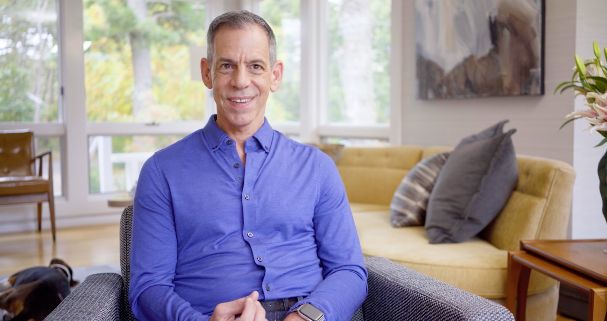

Back to Video
Mom, I Have Something to Tell You
Producer & Editor.

A 30-minute documentary short exploring the bond between gay sons and their mothers.
Therapist Rick Miller had spent years collecting hundreds of hours of deeply personal interviews with gay men and their mothers. He brought us on to find a story within all of that footage and craft it into a short-form narrative. Part of our approach was interviewing Rick himself about his own personal story and why he was so invested in this project — his perspective became the emotional thread that ties the film together. Currently on the festival circuit.